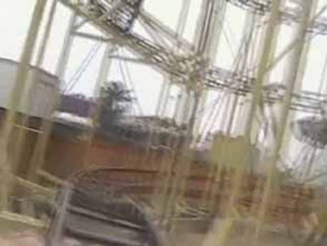
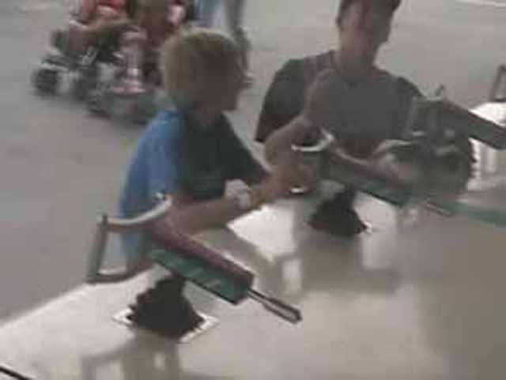
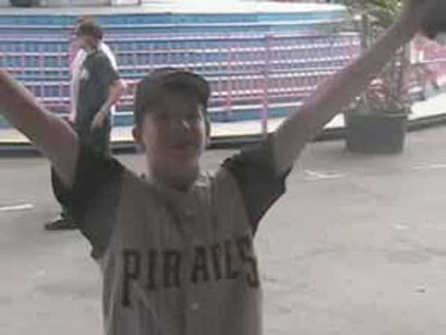

Ventura County Fair 2005
I love these Bungee things! I haven't done one of these since I was in London!
ANDREW! STOP DRIVING! PEOPLE! STOP USING YOUR BUMPER CARS!
 Andrew catches up on his bible reading.
Andrew catches up on his bible reading.
Andrew has clumsily crashed into one of the mirrors!
This is not a mirror effect!!
We just ate one too many deep fried twinkies.
Um Kevin, I have to say that this is the stupidest impression you've ever made.
Andrew is in shock of how cool the veiw from the Ferris Wheel is.
Heres the veiw that Andrew saw. Now you can enjoy it too.
Andrew attempts to leave the Ferris Wheel to surf.
Andrew began to cry because this isn't a credit.
Lets hope Hammerhead at SFMW doesn't have you uncomfortably fall into the restraints.
Andrew, you're for once not happy on a Pirate Ship! Its a miracle!
Andrew tries to win a prize on the ringbottle game, but fails misrebly.
 Heres the one credit at the fair. Yes Andrew, It IS a credit.
Heres the one credit at the fair. Yes Andrew, It IS a credit.
 Besides Superman the Escape, this is the loudest coaster I've been on.
Besides Superman the Escape, this is the loudest coaster I've been on.

Backdraft has a speedy little ending with a small pop of airtime.
OH MY GOD!!! Xtreme!!!! It swung really high and spun really fast and put Knotts La Revolution to shame so easily! Want to ride Isaac?
We were all acting really dumb in the Fun House.
I beat Andrew and Robin so much on the slide.
Feet Cam!
This is Twister. Twister is a Falling Star. Celeste loved it. Heres the veiw you get from Twister.
Andrew:Remember when Gran Slammer was at Knotts? Robin:Whee! I'm having fun! Andrew:Why are there OTSRs on a Falling star?!?! Kevin:Smile! Smile! Wave! Andrew:Shut up Kevin!
DUMBEST DARK RIDE EVER!
Mega Drop is the portable drop ride that travels from fair to fair.
OH MY GOD!!! It drops with such fury! MUCH more fury than DCAs Tower of Teror, KBFs Supreme Scream, & SFMMs Freefall!
Robin isn't sure on what to think of the Storm.
Andrew thinks we're on the balloons at SFMM and spins us really fast!
OH MY GOD!!! Zipper is just INSANE! It always has and always will be INSANE!!!!
5 seconds after this photo was taken, we flipped 5 times in a row!

Andrew and I try out this game!

Andrew is happy because he is once again a champion!
We'll end the fair for the year by having Andrew pray that the bridge works!
Home